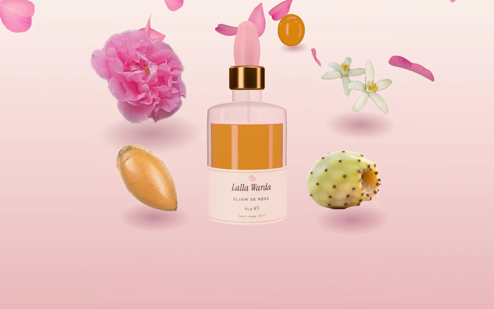
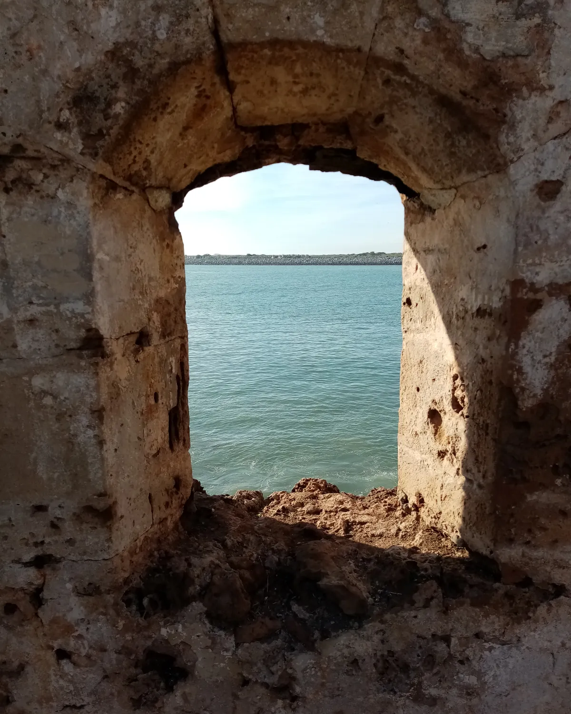

مستحضرات طبيعية من المغرب · القنيطرة
وُلدت من وردة.
زيوت ومياه أزهار وطين مغربي للوجه والشعر. تركيبات قصيرة تُعبّأ يدويًا في القنيطرة.
إكسير الورد · سيروم للوجه · 30 مل
290 درهم
القوامات
بأطراف الأصابع.
زيت يتشرّبه الجلد في ثلاثين ثانية، وبلسم يذوب، وطين يُشطف بسهولة، ورذاذ ناعم كقطرات الندى: كل منتج كما ستشعرين به على بشرتك.
طقوس الوجه
أربع خطوات، عشر دقائق.
تحت المجهر
ما يفعله الزيت بشعرة واحدة.
حمّام الزيت
الطريقة خطوة بخطوة.
المجموعة
ثمانية منتجات، لا أكثر.
روتيني
ثلاثة أسئلة، وطقوسك جاهزة.
أجيبي كما لو كنتِ تتحدثين إلى خبيرة التجميل، وسنقترح عليك عناية الصباح والمساء والأسبوع.
الأصول
طريق الأزهار حتى القنيطرة.
عشرة مكوّنات من عشر جهات في المغرب. كل خط يقود إلى الورشة، حيث تُملأ القوارير وتُلصق عليها البطاقات يدويًا.

حكايتنا
«لالة وردة» كانت جدّتي.
في كل ربيع كانت تقطّر وردها في فناء الدار، في قطّارة من النحاس. كانت الجارات يسمّينها «لالة وردة». كبرتُ بين قوارير ماء الورد والغاسول الذي كانت تحضّره لحمّام يوم الجمعة.
بحكم تكويني في الكيمياء، واصلتُ ما كانت تصنعه بمكوّنات معروفة المصدر وتركيبات قصيرة وتحاليل مخبرية. وما زال كل شيء يُعبّأ يدويًا في القنيطرة، على دفعات صغيرة.
كنزة العمراني، المؤسِّسة
- معصور على البارد
- بدون سيليكون
- بدون عطور صناعية
- دفعات صغيرة
آراء على سبيل المثال (نموذج تجريبي)
أسئلة شائعة